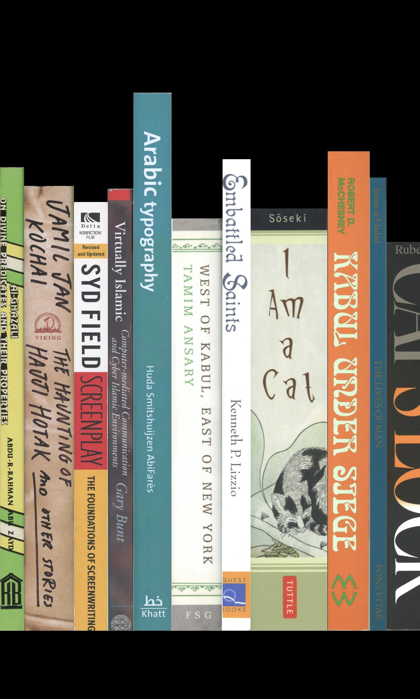
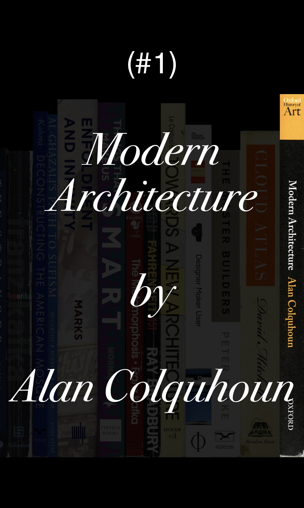

첫 화면
커서를 갖다댈 때
디자인 분석
검은색 배경에 다양한 책들이 진열되어 있다. 실제 책들이 그런 것처럼 두께와 길이가 모두 서로 다르게 디자인되어 있다. 또한 책 사이사이 그림자가 있어 진짜로 꽂혀있는 느낌을 준다. 오른쪽에서 왼쪽으로 가는 순서로 64개의 책이 있다. 책을 클릭해 보면 작가와 책 제목을 알려준다. 클릭했을 때, 선택한 책은 그대로 선명하고 그 책을 제외한 나머지 책들은 모두 어둡고 흐리게 변한다. 따라서 선택한 책이 돋보이는 효과를 준다. 하단에는 제목과 현재 시간이 표시된다. pc로 접속했을 때는 커서를 갖다 댈 때, 모바일로 접속했을 때는 터치했을 때 작가와 제목이 표시된다.